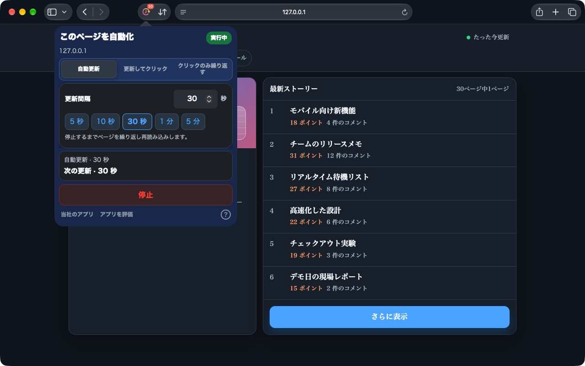
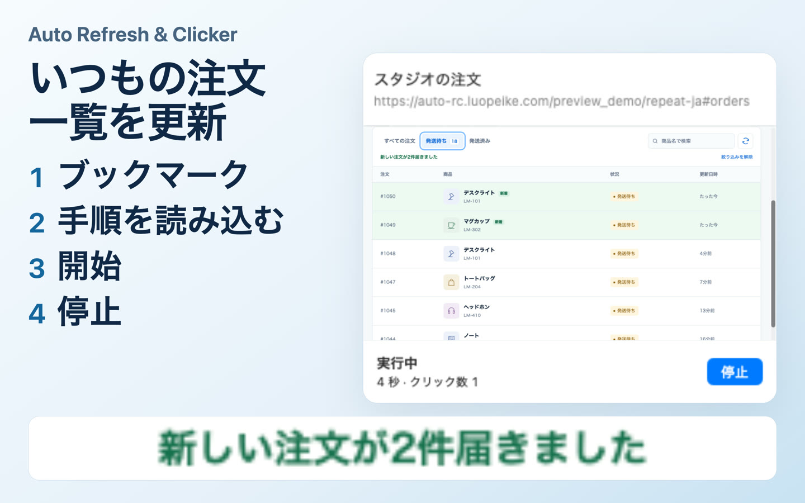
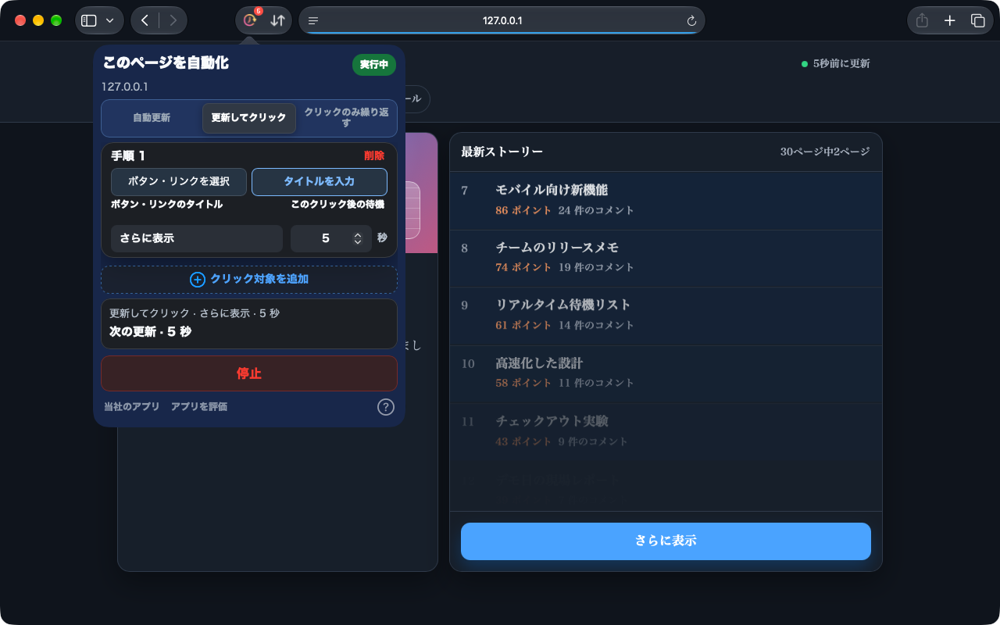
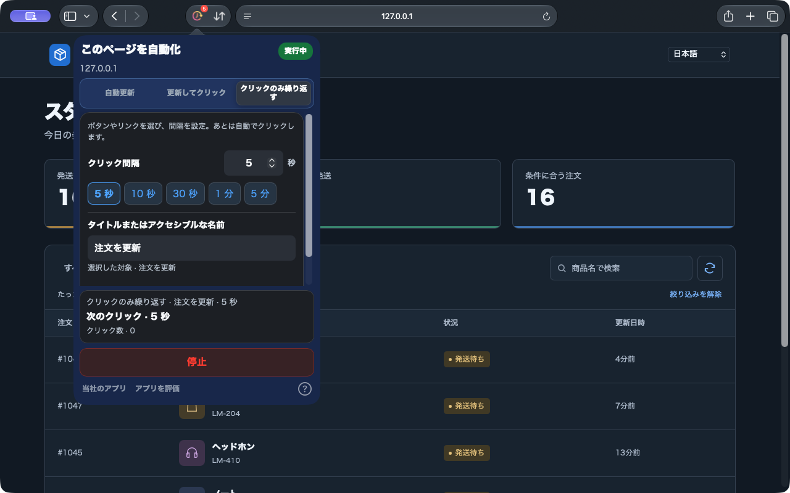

自動更新
プリセットまたは正確な間隔を指定して、在庫やステータスページを更新します。
自動更新の設定手順ブックマークから注文一覧を開き、保存した手順を読み込んで一覧の更新ボタンを一定間隔でクリック。アプリ内でもSafariの拡張機能でも使えます。
同じURLに複数の手順を名前付きで保存できます。そのURLに戻ったら使いたい手順を読み込み、内容を確認して開始します。手順は設定したアプリまたはブラウザに保存されます。
設定ガイドを読む

プリセットまたは正確な間隔を指定して、在庫やステータスページを更新します。
自動更新の設定手順
ページ上でボタンやリンクを選ぶか、タイトルを入力。更新後は設定した順番と待機時間でクリックします。
更新してクリックの設定手順
ページを再読み込みせず、クリックだけ繰り返し。アイコンも選べます。間隔を決めてリストを更新しましょう。
繰り返しクリックの設定手順iPhone / iPad · Mac
インストール後にアプリを開き、Safari の設定で拡張機能とサイトへのアクセスを許可します。
モードを選び、間隔や各ステップの待ち時間を設定します。クリックするボタンやリンクは、ページ上で選ぶか、タイトルを入力できます。
開始後は実行状態とカウントダウンを確認。いつでも停止や変更の適用ができます。
ブックマークには分かりやすい名前を付けられます。閲覧履歴は削除するまでこの端末に保存されます。記録の一時停止や履歴の消去を行っても、ブックマークと保存した手順は残ります。
プライバシーiPhone、iPad、Macのアプリ内でページを開くか、Safariのタブで拡張機能を使えます。デスクトップ版Chromeには専用の拡張機能があります。
アイコンを画面上で選ぶほか、ボタンやリンクの名前も指定できます。名前の一部が変わる場合はワイルドカードを有効にし、その部分に * を入力してください。操作できる対象を1つに絞れないときは停止します。
インストールしたアプリを一度開き、Safari の設定 → 機能拡張をご確認ください。Safari 15.4 以降をご利用ください。表示されない場合は、macOS、Safari、アプリのバージョンと入手元をサポートへお知らせください。
現在の Safari 版では、設定を編集して変更を適用できます。タスクの概要で適用中の設定を確認し、停止ボタンで終了できます。
最新の価格と互換性は各ストアでご確認ください。